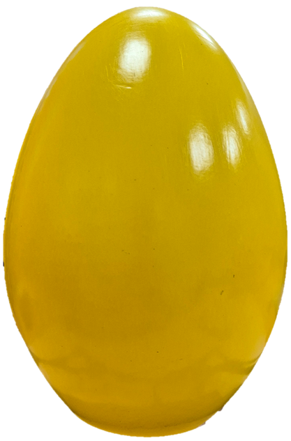
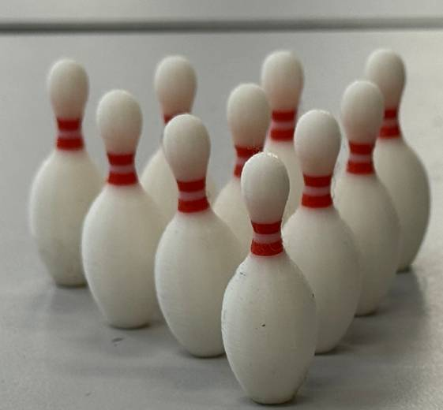
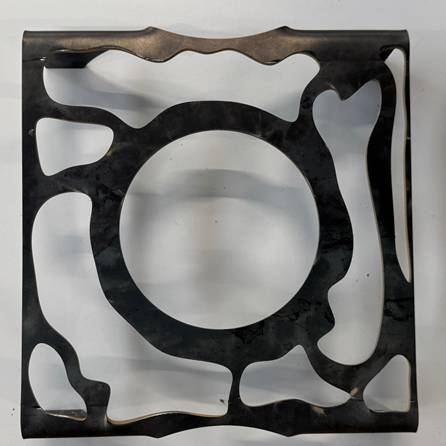
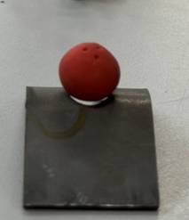
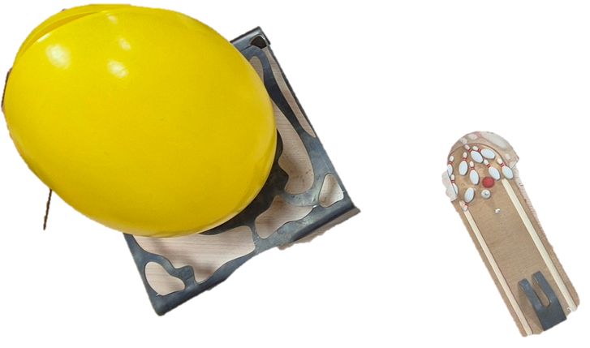

PROJET BUT2 GMP
CONTEXTE DE LA REALISATION
- Projet universitaire réalisé en équipe durant ma deuxième année de BUT GMP.
- Conception et fabrication d'un jeu de table autour du thème du bowling.
- Projet mené de la recherche de solutions jusqu'à la fabrication et à l'étude économique.
- Mise en pratique des connaissances en conception mécanique, industrialisation et fabrication.
OBJECTIFS DU PROJET
- Concevoir et fabriquer un jeu miniature fonctionnelle et transportable.
- Réaliser un objet démontable comportant au moins six pièces différentes.
- Intégrer au minimum trois matériaux différents.
- Concevoir un œuf de transport.
- Réaliser un support permettant de maintenir l'œuf et le jeu.
CAHIER DES CHARGES
- Respecter les contraintes dimensionnelles et fonctionnelles du projet.
- Concevoir un ensemble démontable composé de plusieurs pièces.
- Utiliser différents matériaux et procédés de fabrication.
- Prévoir des opérations de découpe laser ou jet d'eau.
- Concevoir un support adapté au rangement ET au transport du jeu.
- Prendre en compte les contraintes de fabrication, de temps et de coûts.
METHODES
- Méthodes utilisées :
- Recherche et comparaison de solutions techniques.
- Conception des pièces et de l'assemblage.
- Réalisation de modèles et de parcours de fabrication assistée par ordinateur (FAO).
- Élaboration de gammes de fabrication et de contrats de phases.
- Fabrication, assemblage et essais des différents éléments.
- Procédés et moyen de fabrication :
- Usinage et découpe de la piste.
- Découpe jet d'eau du support.
- Thermoformage de l'œuf et de la protection de fin de piste.
- Impression 3D des quilles.
- Ponçage, peinture, pliage et perçage.
- Contraintes et difficultés :
- Respecter le cahier des charges et le temps de fabrication disponible.
- Adapter les conceptions aux procédés et aux machines disponibles.
- Résoudre les problèmes rencontrés lors de la fabrication de la piste et de l'œuf.
- Assurer la cohérence des fichiers entre les différents sous-groupes.
ETAPES DE LA REALISATION
- Recherche de solutions : étude de plusieurs concepts avant de retenir le principe du bowling miniature.
- Conception : définition de la géométrie, des dimensions et de l'assemblage des différentes pièces.
- Industrialisation : préparation des gammes, des contrats de phases et des programmes FAO.
- Fabrication : réalisation de la piste, de l'œuf, des quilles, du support et des protections.
- Finalisation : assemblage, finitions et réalisation d'une notice d'utilisation en anglais.
RESULTATS
- Adaptation des solutions techniques face aux difficultés rencontrées.
- Réalisation d'une notice permettant de présenter les étapes clés et les consignes d'utilisation.
- Estimation du coût global du projet à 4 165 €, selon le bilan économique présenté lors de la soutenance.
-
Résultat de l'oeuf final

-
Résultat des quilles imprimées

-
Résultat final du support

-
Résultat final de la rampe

Résultat final du projet

LIEN AVEC RESSOURSCES MODULES DU GMP
Ces ressources et modules ont permis de développer mon côté pratique.
- Conception mécanique : concevoir des pièces, définir leur géométrie et réfléchir à leur assemblage.
- Industrialisation : préparer les gammes de fabrication et les contrats de phases.
- Fabrication : mettre en œuvre plusieurs procédés de production.
- Résolution de problèmes : adapter les solutions techniques face aux difficultés rencontrées.
- Gestion de projet : organiser le travail en équipe, suivre les étapes et tenir compte des contraintes de temps.
- Communication technique : réaliser une notice d'utilisation et présenter les résultats du projet.
→ Impression 3D